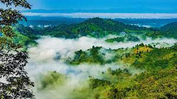

bandarban travel history
author-abdullah al maruf

The three highest peaks of Bangladesh – Tahjindong (1,280 meters, also known as Bijoy), Mowdok Mual (1,052 meters), and Keokradong (883 metres) – are located in Bandarban district, as well as Raikhiang Lake, the highest lake in Bangladesh. Several mountains in the district include Tahjindong (1,280 meters), Mowdok Mual (1,052 m), and Keokradong (1,230 m). Chimbuk Peak and Boga Lake are two more highly noted features of the district. The Sangu River (also known as Sangpo or Shankha), the only river born inside Bangladesh territory, runs through Bandarban. The other rivers in the district are Matamuhuri and Bakkhali. Parts of Kaptai Lake, the biggest lake in Bangladesh, fall under the district.
sylet toure
author-abdullah al maruf

Each and every expanse of Bangladesh abounds in greenery, but none can compare with Sylhet. From spinning hills covered in lush green tea gardens and gleaming paddy fields to olive marshlands and reserved forests, Sylhet seems to have been blessed with every possible shade of green one can imagine.
Visit Sylhet is a platform to inspire people to explore greater Sylhet. Our purpose is to deliver growth for Sylhet by attracting visitors and building Sylhet reputation as a true destination.
sentmertine toure
author-abdullah al maruf

Saint Martin (French: Saint-Martin; Dutch: Sint Maarten) is an island in the northeast Caribbean Sea, approximately 300 km (190 mi) east of Puerto Rico. The 87 square kilometres (34 sq mi) island is divided roughly 60:40 between the French Republic (53 square kilometres (20 sq mi))[1] and the Kingdom of the Netherlands (34 square kilometres (13 sq mi)),[2] but the Dutch part is more populated than the French part. The division dates to 1648. The northern French part comprises the Collectivity of Saint Martin and is an overseas collectivity of the French Republic. As part of France, the French part of the island is also part of the European Union.[6] The southern Dutch part comprises Sint Maarten and is one of four constituent countries that form the Kingdom of the Netherlands.